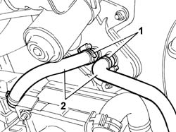
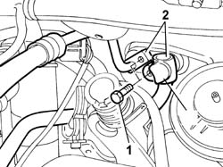
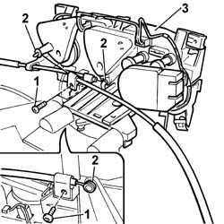
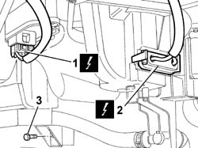
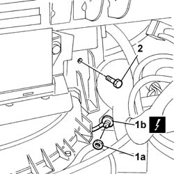
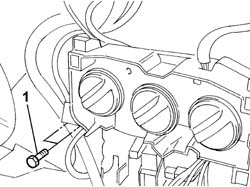

5040C12 AIR CONDITIONER HOUSING - R R WITH FACIA DISCONNECTED
- Path
- Procedures > 50 AUXILIARY UNITS > 5040 AIR CONDITIONING CASING AND COMPONENTS > 5040C AIR CONDITIONER BOX AND COMPONENTS > 5040C12 AIR CONDITIONER HOUSING - R R WITH FACIA DISCONNECTED
- Kind
- repair procedure (removal / refitting; the operation number is the code)
- Applies to
- all engines; all production periods
- Interactive page
- https://sloeber94.github.io/elrnDB-fDct/en/#/244001289
Applies to: all engines; all production periods
 Removing
Removing
 Refitting
RefittingOp. 0010T20 COOLANT CHECK DENSITY AND TOP UP IF NECESSARY
Op. 0010T84 COOLANT FOR AIR CONDITIONING SYSTEM DEHYDRATE AND RECHARGE
1. Remove the retaining bands.
2. Disconnect the pipes from the heater tap.

Applies to: all engines; all production periods
1. Undo the fixing bolts.
2. Disconnect the air conditioning system pipes from the expansion valve connector.

Applies to: all engines; all production periods
- Mark the control cables.
1. Undo the fixing bolts.
2. Disconnect the control cables.
3. Remove the heater controls support.

Applies to: all engines; all production periods
- Undo the bolts fixing the dashboard trim supporting crossmember.
1. Disconnect the electrical connection for the fan resistance.
 | Description | Connector |
|---|---|---|
1 | Passenger compartment air fan adjustment resistance | O030 |
2. Disconnect the electrical connection for the fan.
| Description | Connector |
|---|---|---|
2 | Passenger compartment air fan | N085 |
3. Undo the lower fixing nut.

Applies to: all engines; all production periods
1. Undo the nut (1a) and disconnect the earth (1b).
| Description | Connector |
|---|---|---|
1b | Passenger dashboard earth | C020 |
2. Undo the fixing bolt.

Applies to: all engines; all production periods
1. Undo the fixing bolts.

Applies to: all engines; all production periods
- Disconnect the electrical connection for the frost thermostat on the air conditioning casing.
| Description | Connector |
|---|---|---|
. | Frost sensor | K086 |
- Open the retaining bands and move the electrical wiring aside.
- With the help of a second mechanic, lift up the dashboard trim supporting crossmember.
- Remove the air conditioning casing.
Applies to: all engines; all production periods
Refitting
Removing- With the help of a second mechanic, lift up the dashboard trim supporting crossmember and place the air conditioning casing in position.
- Tighten the bolts fixing the dashboard trim supporting crossmember.
- Tighten the bolts and the nut fixing the air conditioning casing.
- Refit the electrical connections.
| Description | Connector |
|---|---|---|
. | Frost sensor | K086 |
| Description | Connector |
|---|---|---|
. | Passenger compartment air fan | N085 |
| Description | Connector |
|---|---|---|
. | Passenger compartment air fan adjustment resistance | O030 |
- Place the earth in the wheel arch and tighten the fixing nut.
| Description | Connector |
|---|---|---|
. | Passenger dashboard earth | C020 |
- Position the wiring and secure it using the retaining bands.
- Position the heater controls support.
- Connect the control cables marked previously and tighten the fixing bolts.
- Connect the air conditioning system pipes to the expansion valve connector and tighten the fixing bolts.
- Connect the pipes to the heater tap and secure them using the retaining bands.
Op. 0010T84 COOLANT FOR AIR CONDITIONING SYSTEM DEHYDRATE AND RECHARGE
Topics linked from this page (2)
- 0010T20 COOLANT CHECK DENSITY AND TOP UP IF NECESSARY
- 0010T84 COOLANT FOR AIR CONDITIONING SYSTEM DEHYDRATE AND RECHARGE
Topics that link to this page (10)
- 5040A80 EXPANSION/CONNECTION PIPE - R R
- 5040B22 AIR CONDITIONING SYSTEM DE-MISTER THERMOSTAT - R+R
- 5040B30 EXPANSION VALVE (TUBE ORIFICE) - R+R
- 5040C10 AIR CONDITIONER CONTROL SUPPORT - R+R
- 5040C30 FAN MOTOR - R+R
- 5040C50 AIR CONDITIONER HEATER RADIATOR - R+R
- 5040C56 CONNECTING PIPE BETWEEN TAP AND AIR CONDITIONING HEATER RADIATOR - R.R.
- 5040C58 AIR CONDITIONING HEATER RADIATOR TAP - R.R.
- 5040C64 A/C MANUAL CONTROL SWITCH (ONE) - R+R
- 5040D47 AIR DISTRBUTION FLAP - AIR INTAKE/RECIRCULATION - TAP TRANSMISSION - R.R.